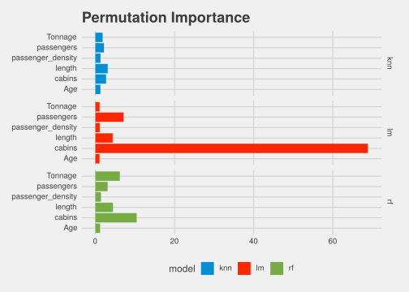

In this blog post, we are going to talk about a few tools
Everyone loves tree based models. Gradient boosting, random forests, and friends are wonderful, flexible tools. One of the other benefits of these models, because of their tree-ness, is that we are able to actually see how “important” each variable is in the decisions the model is making. This is also one of many many reasons why we love linear models, we can actually see and quantify the strength of a feature in our model. However, why must we limit ourselves to just linear and tree based models?
Lets try and think of a new approach to get variable importance. When I was first really getting into ML, I remember asking one of my professors the question: “How much time do you spend on feature engineering?”. I will never forget his answer, he told me: “Feature engineering [is] the most crucial part to improve both accuracy and model generation. If you have an unneccessary feature in the model, you are in essence fitting noise.”. This has stuck with me for a long time, and it is a useful thing to keep in mind while discussing permutation importance.
If unneccessary features just provide noise which decreases model accuracy and generalization, what happens if we replace a good feature with noise? Our model should be inherently worse, no? This is the key idea of permutation importance.
If I replace a feature with noise, how much worse does the model perform?
This is the key idea of permutation based variable importance. All we are going to do to calculate this is three simple steps:
Calculate prediction loss
Replace a feature with noise
Recalculate prediction loss
Compare
Lets formulate permutation importance mathematically now! First, lets define our data as the set \(x\), with \(m\) observations and \(n\) features. Next, lets consider two sets within \(x\): \(x_s\) and \(x_c\). \(x_s\) represents the feature(s) we are interested in, and \(x_c\) represents the complement of \(x_s\) (in english, everything else). Thus:
\[x = (x_s, x_c)\]
Lets first define the original loss with the original features as \(\mathcal{L}\),
\[ \mathcal{L} = \mathrm{loss}\left(x_s, x_c \right) \]
Next, we need to replace \(x_s\) with noise. To do that, we want to sample the marginal distribtion of \(x_s\). This means we want to sample the distribution of \(x_s\) independent of other features. With a reasonably sized dataset, we can just do a permutation of \(x_s\) for more or less the same result. We will denote the permutation of \(x_s\) as \(x_s^*\). Next, lets define the loss, \(\mathcal{L}*\) of the permuted feature: \[ \mathcal{L}* = \mathrm{loss}\left(x_s^*, x_c \right) \]
Finally, we can calculate the variable importance of \(x_s\):
\[ VIP_{\mathrm{perm}}(x_s) = \frac{\mathcal{L}*}{\mathcal{L}} \]
There we go! Its that simple! An addendum to this suggested by Jeremy Howard of fast.ai: Add a feature of pure noise and see how important that is, for reference.
For our data, we will use the dataset discussed in Benjamin Tayo’s amazing blog post. We use this dataset because it presents a large challenge to us, with highly correlated features. This will show some of the pitfalls of some of our techniques.
The goal with this dataset is to predict the number of crew members which will be on a cruise ship, given some paramters describing the ship. I believe the independent variables are fairly self explanatory. First, lets read the data into python and do a train test split:
import seaborn as sns
from sklearn.linear_model import LinearRegression
from sklearn.neighbors import KNeighborsRegressor
from sklearn.ensemble import RandomForestRegressor
from sklearn.datasets import load_boston, fetch_california_housing
import matplotlib.pyplot as plt
import numpy as np
import pandas as pd
from sklearn.metrics import mean_squared_error as loss_mse
import math
import statistics as stats
import matplotlib.cm as cm
from pprint import pprint
# so this is readable:
import warnings
from sklearn.exceptions import DataConversionWarning, ConvergenceWarning
warnings.filterwarnings(action='ignore', category=DataConversionWarning)
warnings.simplefilter(action='ignore', category=FutureWarning)
warnings.simplefilter(action='ignore', category=ConvergenceWarning)
cruise = pd.read_csv("https://github.com/bot13956/ML_Model_for_Predicting_Ships_Crew_Size/raw/master/cruise_ship_info.csv")
X = cruise.loc[:, cruise.columns != "crew"]
X = X.loc[:, X.columns != "Ship_name"]
X = X.loc[:, X.columns != "Cruise_line"]
y = cruise.loc[:, cruise.columns == "crew"]
def split(df, p_train = 0.75, random_state = 0):
train = df.sample(frac = p_train, random_state = random_state)
test = df.drop(train.index)
return(train, test)
(X_train, X_test), (y_train, y_test) = (split(x) for x in [X, y])Next, lets use the amazing reticulate package to pass these exact data frames into R:
X <- py$X
y <- py$y
X_train <- py$X_train
X_test <- py$X_test
y_train <- py$y_train
y_test <- py$y_test
XNow we are all set up to implement permutation importance in python and in R
(Click tabs below to change language!)
First, lets set up three models to test: A linear model, a neural network, and a random forest:
lm = LinearRegression()
knn = KNeighborsRegressor(13)
rf = RandomForestRegressor(n_estimators = 100)
models = [lm, knn, rf]
for m in models:
m.fit(X_train, y_train)#> LinearRegression(copy_X=True, fit_intercept=True, n_jobs=None, normalize=False)
#> KNeighborsRegressor(algorithm='auto', leaf_size=30, metric='minkowski',
#> metric_params=None, n_jobs=None, n_neighbors=13, p=2,
#> weights='uniform')
#> RandomForestRegressor(bootstrap=True, criterion='mse', max_depth=None,
#> max_features='auto', max_leaf_nodes=None,
#> min_impurity_decrease=0.0, min_impurity_split=None,
#> min_samples_leaf=1, min_samples_split=2,
#> min_weight_fraction_leaf=0.0, n_estimators=100,
#> n_jobs=None, oob_score=False, random_state=None,
#> verbose=0, warm_start=False)Lets check out as a baseline truth which features are important in the random forest, and the strength of the predictors in our linear regression:
#> {'Age': 0.013119682112048461,
#> 'Tonnage': 0.3949729008182226,
#> 'cabins': 0.41853212519072114,
#> 'length': 0.06650122787981155,
#> 'passenger_density': 0.014998475530267374,
#> 'passengers': 0.09187558846892888}#> {'Age': array([-0.01321228]),
#> 'Tonnage': array([0.00316145]),
#> 'cabins': array([0.79858261]),
#> 'length': array([0.39111394]),
#> 'passenger_density': array([0.01037499]),
#> 'passengers': array([-0.1045376])}Looks like tonnage and cabins are the most important variables for the random forest, and cabins, length, and passengers for linear regression.
Next, lets create a function for permutation importance! This should be pretty easy to do, I have added in a few extra components for thoroughness, but the code is not hard:
def permutation_importance(model, x, y, loss, base = False, x_train = None, y_train = None, kind = "prop", n_rounds = 5):
explan = x.columns
baseline = loss(y, model.predict(x))
res = {k:[] for k in explan}
if (base is True):
res["baseline"] = []
for n in range(0, n_rounds):
for i in range(0, len(explan)):
col = explan[i]
x_temp = x.copy()
x_temp[col] = np.random.permutation(x_temp[col])
if (kind is not "prop"):
res[col].append(loss(y, model.predict(x_temp)) - baseline)
else:
res[col].append(loss(y, model.predict(x_temp)) / baseline)
if (base is True):
x_temp = x.copy()
x_train2 = x_train.copy()
x_temp["baseline"] = np.clip(np.random.normal(size = len(x_temp)), -1., 1.)
x_train2["baseline"] = np.clip(np.random.normal(size = len(x_train2)), -1., 1.)
mod2 = type(model)()
mod2.fit(x_train2, y_train)
if (kind is not "prop"):
res["baseline"].append(loss(y, mod2.predict(x_temp)) - baseline)
else:
res["baseline"].append(loss(y, mod2.predict(x_temp)) / baseline)
return(pd.DataFrame.from_dict(res))Lets also define a helper function to help us do this for all our models, and then go ahead and calculate the importances!
# convert object name to string!
def get_name(obj):
name =[x for x in globals() if globals()[x] is obj][0]
return(name)
imps = {}
for m in models:
imps[get_name(m)] = permutation_importance(m, X_test, y_test, loss_mse, True, X_train, y_train, n_rounds = 5)
pprint(imps)#> {'knn': Age Tonnage passengers length cabins passenger_density baseline
#> 0 0.904846 21.227473 1.095418 0.991048 1.047782 1.201898 1.437909
#> 1 0.933409 20.076817 1.239120 1.005116 0.964745 1.319825 1.307646
#> 2 0.857731 20.391907 1.368085 1.014068 0.966126 1.395717 1.298623
#> 3 0.957669 19.791686 1.284885 1.005116 0.982118 1.344682 1.305520
#> 4 0.894280 12.471207 1.339701 1.005519 1.013681 1.426535 1.311211,
#> 'lm': Age Tonnage passengers length cabins passenger_density baseline
#> 0 0.985331 1.079901 7.840429 4.393997 64.807813 1.112839 0.970219
#> 1 0.960415 1.015112 7.038711 4.349526 79.508573 1.150089 0.983449
#> 2 1.026558 1.089876 6.646655 4.719806 69.885430 1.087388 1.013224
#> 3 1.061575 1.083981 6.487603 3.496625 79.700783 1.125177 1.018032
#> 4 1.112396 0.992705 7.151765 4.868272 77.002066 1.037946 1.012768,
#> 'rf': Age Tonnage passengers length cabins passenger_density baseline
#> 0 1.156308 14.579041 2.390810 3.266574 11.728786 1.651785 1.529226
#> 1 1.129262 13.828749 2.682880 2.908450 14.950558 1.352273 1.944743
#> 2 1.161423 11.956569 2.165861 1.992307 20.783301 1.433651 1.141467
#> 3 1.162300 11.425421 2.301585 1.679158 18.302634 1.384981 1.817001
#> 4 1.197191 14.610470 1.644158 2.539609 18.335109 1.603873 1.587114}This output is a bit hard to read, so lets go ahead and write a helper function which averages the importances, and plots them nicely!
plt.style.use("ggplot")
def plot_perm_imp(df, ax = None, color = 'blue'):
# mean the columns and put it back into a data frame
df1 = (df.apply(stats.mean, 0, result_type = "broadcast")).drop(df.index[1:])
# create a new data frame excluding baseline, so we can do something special with it
df_temp = df1.loc[:, df.columns != 'baseline']
# melt and sort it for plotting
df2 = df_temp.melt(var_name = 'variable', value_name = 'importance')
df2 = df2.sort_values(by = "importance")
# plot it nicely
df2.plot(kind = 'barh', x = 'variable', y = 'importance', width = 0.8, ax = ax, color = color)
# draw a bar and an arrow to baseline
for n in df1.columns:
if n is "baseline":
plt.axvline(x = df1[n][0])
plt.annotate('baseline',
xy = (df1[n][0], 1),
xytext = (df1[n][0] + 0.4, 3),
arrowprops = dict(facecolor = 'black',
shrink = 0.05),
bbox = dict(boxstyle = "square", fc = (1,1,1)))
# plot the importance dict!
fig = plt.figure(figsize=(10,10))
for i in range(len(imps.keys())):
ax = fig.add_subplot(len(list(imps.keys())),1, i+1)
c = sns.color_palette("hls", i+1)[i]
plot_perm_imp(imps[list(imps.keys())[i]], ax = ax, color = c)
ax.set_title(list(imps.keys())[i])
for tick in ax.yaxis.get_major_ticks():
tick.label.set_fontsize("x-small")
tick.label.set_rotation(45)
plt.show()Permutation Importances for linear regression, knn, and a random forest
Looks like it worked alright!! Especially for random forest, we nicely identified the two most important features, however with little granularity. With our linear model, it is a little less clear, but we do see that the same three most important features carry through! However, we have no real granularity or idea the scale of the effect of the variable. We also carry a risk with permutation importance and correlated variables in general: we are using often unrealistic observations. For example, we may be looking a tiny boats (in length) which weigh the same as the largest boats (they would sink!!) with our permutations. This leads to often unreliable output with many permutation based tools, which we will also explore in this post.
First, lets set up three models to test: A linear model, a knn model, and a random forest:
library(randomForest)
library(kknn)
# set up models with parameters
rf <- function(df) {
return(randomForest(crew ~ ., data = df, ntree = 100))
}
# knn in R is annoying so we will need to a consistent api ourselves:
knn <- function(df) {
res <- list()
res$train <- df
res$k <- 13
res <- structure(res, class = "knn")
}
predict.knn <- function(obj, newdata) {
out <- kknn(crew ~ ., train = obj$train, test = newdata, k = 13)
return(as.numeric(out$fitted.values))
}
linear_model <- function(df) {
lm(crew ~ ., data = df)
}
models <- list("lm" = linear_model,"knn"= knn,"rf"= rf)
t_train <- cbind(X_train, y_train)
trained_models <- lapply(models, function(f) f(t_train))Lets check out as a baseline truth which features are important in the random forest, and the strength of the predictors in our linear regression:
| Estimate | Std. Error | t value | Pr(>|t|) | |
|---|---|---|---|---|
| (Intercept) | -0.9349 | 1.878 | -0.4977 | 0.6197 |
| Age | -0.01321 | 0.02083 | -0.6343 | 0.5272 |
| Tonnage | 0.003161 | 0.01692 | 0.1868 | 0.8522 |
| passengers | -0.1045 | 0.06831 | -1.53 | 0.1288 |
| length | 0.3911 | 0.1624 | 2.409 | 0.01765 |
| cabins | 0.7986 | 0.1058 | 7.545 | 1.34e-11 |
| passenger_density | 0.01037 | 0.02618 | 0.3963 | 0.6927 |
| Observations | Residual Std. Error | \(R^2\) | Adjusted \(R^2\) |
|---|---|---|---|
| 118 | 1.089 | 0.906 | 0.9009 |
| IncNodePurity | |
|---|---|
| Age | 80.33 |
| Tonnage | 362.7 |
| passengers | 271.5 |
| length | 267.6 |
| cabins | 373.6 |
| passenger_density | 23.57 |
Looks like tonnage and cabins are the most important variables for the random forest, and cabins, length, and passengers for linear regression.
Next, lets create a function for permutation importance! This should be pretty easy to do, I have added in a few extra components for thoroughness, but the code is not hard:
# loss function
loss_mse <- function(truth, preds) {
error <- truth - preds
square_error <- error^2
return(mean(square_error))
}
# get baseline loss
get_loss <- function(model, x, y, loss) {
loss(y, predict(model, x))
}
models[[1]]#> function(df) {
#> lm(crew ~ ., data = df)
#> }#> [1] 0.3811438#> Warning in mean.default(square_error): argument is not numeric or logical:
#> returning NA#> [1] NA# permute a single column
permute_column <- function(df, col) {
df[[col]] <- df[[col]][sample(1:nrow(df))]
return(df)
}
permutation_importance <- function(model, x, y, loss, x_train = NA, y_train = NA, n_rounds = 5) {
baseline <- get_loss(model, x, y[[1]], loss)
explan <- names(x)
single_round_imp <- function(df) {
dfs <- lapply(explan, function(i) permute_column(x, i))
return(vapply(dfs, function(i) get_loss(model, i, y[[1]], loss), numeric(1)))
}
res <- lapply(1:n_rounds, function(x) single_round_imp(df))
res <- as.data.frame(do.call(rbind, res))
res <- as.data.frame(lapply(res, function(x) x/baseline))
names(res) <- names(x)
return(as.data.frame(lapply(res, mean)))
}
# we can do this in a second because R is speedy
perm_vips <- lapply(trained_models, function(x) permutation_importance(x, X_test, y_test, loss_mse, n_rounds = 30))
pander::pander(perm_vips)lm:
| Age | Tonnage | passengers | length | cabins | passenger_density |
|---|---|---|---|---|---|
| 1.033 | 1.048 | 7.264 | 4.344 | 68.92 | 1.076 |
knn:
| Age | Tonnage | passengers | length | cabins | passenger_density |
|---|---|---|---|---|---|
| 1.247 | 1.854 | 2.101 | 3.125 | 2.807 | 1.258 |
rf:
| Age | Tonnage | passengers | length | cabins | passenger_density |
|---|---|---|---|---|---|
| 1.094 | 5.539 | 4.138 | 3.888 | 7.491 | 1.393 |
So, it looks like our importances are quite similar to the importances calculated by the models explicitly, so not a bad job! Lets go ahead and produce a nice plot!
library(tidyverse)
vip_flat <- lapply(perm_vips, gather)
# Finally an appropriate use of superassignment!!
lapply(names(vip_flat), function(x) {
vip_flat[[x]][["model"]] <<- x
}) %>% invisible
do.call( rbind, vip_flat) %>% as.data.frame %>%
ggplot(aes(x = key, y = value, fill = model)) + geom_bar(stat = "identity") +
facet_grid(model ~ ., scales = "free") + coord_flip() + ggthemes::theme_fivethirtyeight() +
ggthemes::scale_fill_fivethirtyeight() + ggtitle("Permutation Importance")
Looks like it worked alright!! Especially for random forest, we nicely identified the two most important features, however with little granularity. With our linear model, it is a little less clear, but we do see that the same three most important features carry through! However, we have no real granularity or idea the scale of the effect of the variable. We also carry a risk with permutation importance and correlated variables in general: we are using often unrealistic observations. For example, we may be looking a tiny boats (in length) which weigh the same as the largest boats (they would sink!!) with our permutations. This leads to often unreliable output with many permutation based tools, which we will also explore in this post.